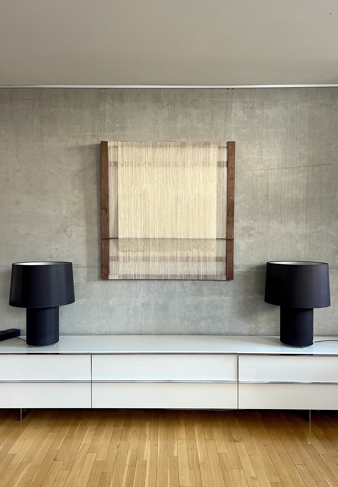
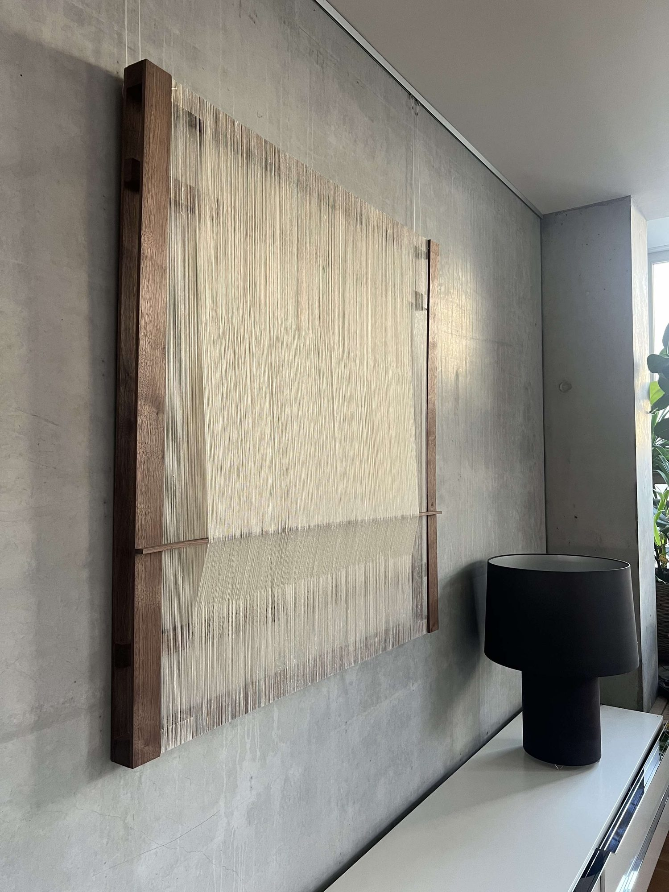
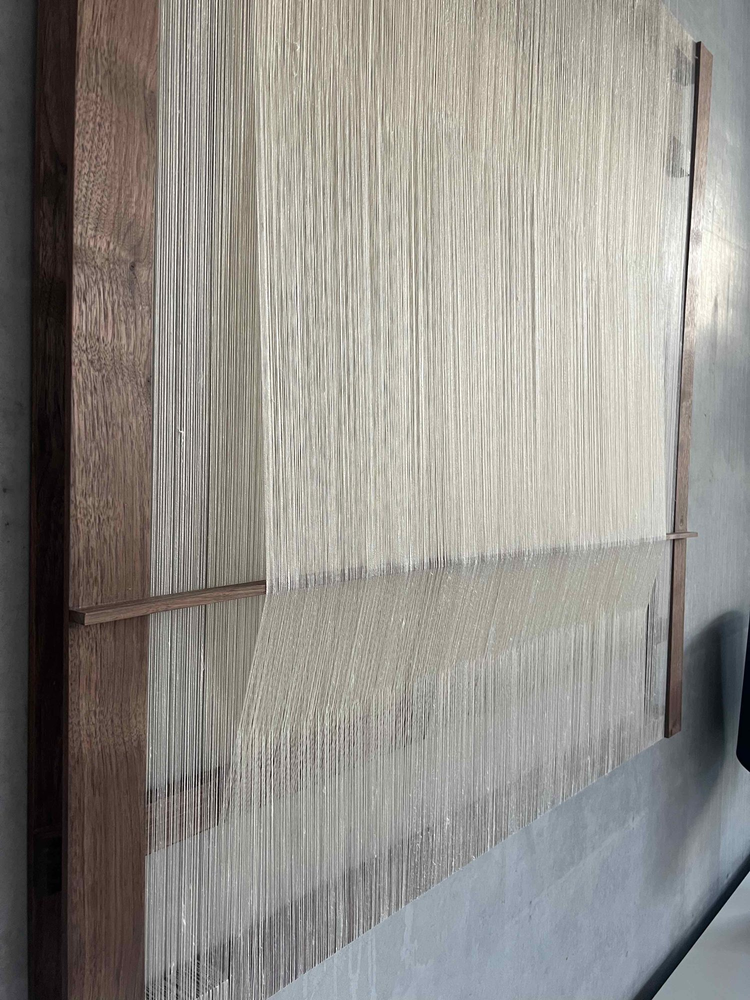
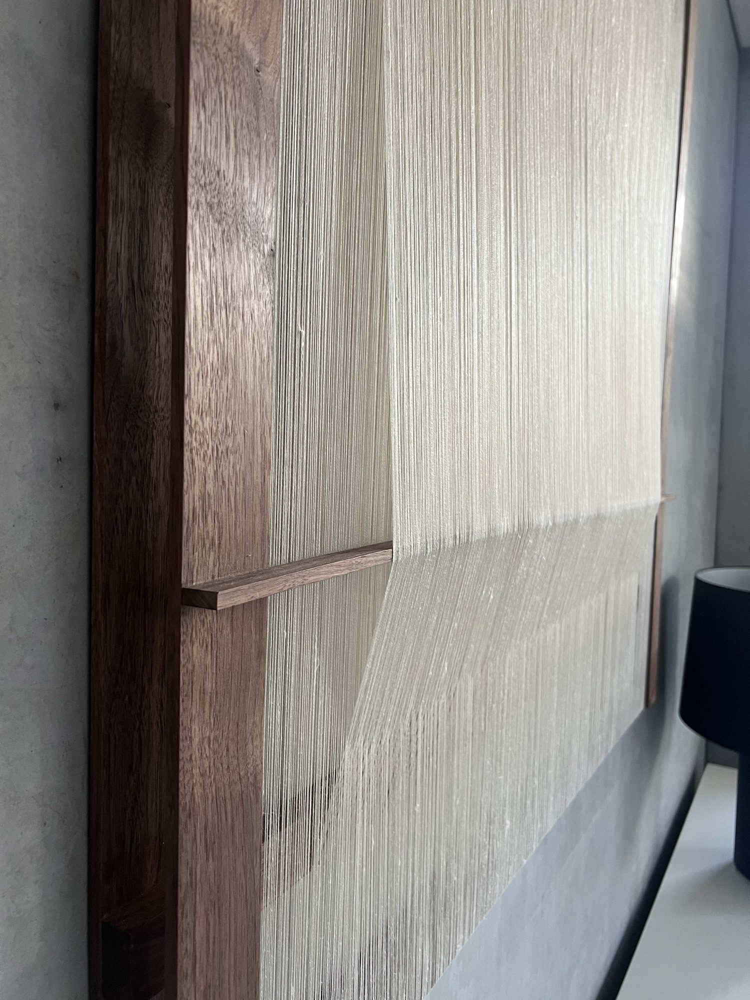

Silence, 2025
Black walnut, silk, love, time.
This work was conceived and created for a dear friend who had recently retired from a fast-paced career in the Berlin music industry. The thread is continuous and repetitive, creating two intersecting surfaces supported by a solid yet airy black walnut frame.
In the space, the work has a meditative air about it, allowing for a moment of presence and calm.


